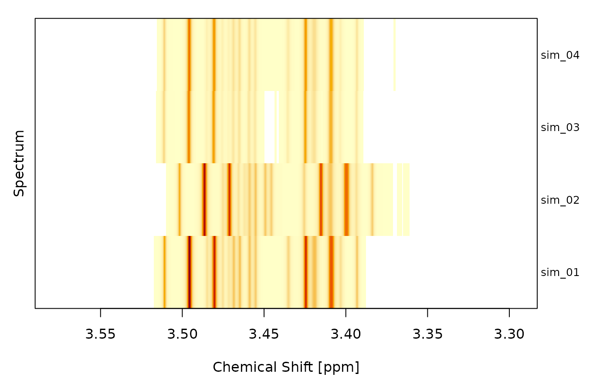
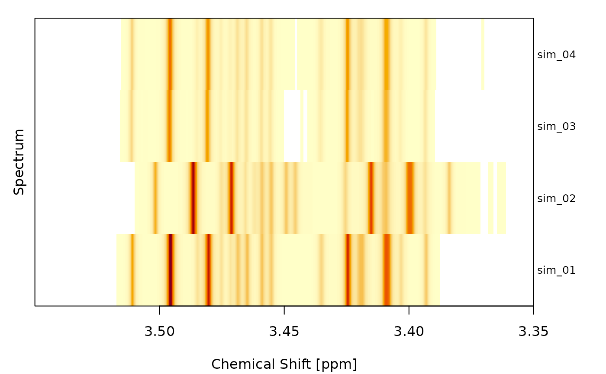

Plot a set of spectra as a heatmap. Each row corresponds to one spectrum, each column to a chemical-shift datapoint, and the signal intensity is color-coded.
If the spectra were simulated (i.e. carry a simpar element in
meta), the true peaks are highlighted with thick rectangles spanning
x0 +- lambda. If the spectra have additionally been deconvoluted, the
rectangles are colored according to whether each peak was correctly
identified (green), missed (yellow) or wrongly identified (red, drawn at
the position of the deconvoluted peak).
Usage
heat_spectra(
objs,
foc_rgn = NULL,
what = NULL,
cols = NULL,
xlab = "Chemical Shift [ppm]",
ylab = "Spectrum",
mar = c(4.1, 2.1, 1.1, 0.5),
y = NULL,
y_cols = NULL,
true_x0 = NULL,
true_col = "darkgreen",
true_tol = NULL,
scale_cols = FALSE,
cex_names = 0.8,
xaxis_side = 1,
col_scores = NULL,
col_sep = NULL,
row_sep = NULL,
main = NULL,
names = NULL,
ref = NULL,
ref_col = "red",
ref_lwd = NULL,
sparse = FALSE,
xaxt = "s"
)Arguments
- objs
An object of type
spectrum,spectra,decon2,decons2,alignoraligns, OR a numeric matrix with chemical-shift values ascolnames(rows are spectra). To plot a feature matrix derived from peak areas, usesi_mat()and pass the result.- foc_rgn
Numeric vector of length 2 specifying the focus region in ppm (e.g.
c(3.55, 3.35)). If NULL (default), the full spectrum is shown.- what
Which signal to plot:
"si"(raw),"sup"(superposition of Lorentz curves) or"supal"(aligned superposition). Defaults to a sensible choice based on the input class. Ignored whenobjsis a matrix.- cols
Character vector of colors used as intensity color palette. Defaults to
hcl.colors(64, "YlOrRd", rev = TRUE).- xlab, ylab
Axis labels.
- mar
Numeric vector of length 4 specifying the plot margins. Passed to
par(). The right margin is overridden at runtime to fit the spectra names.- y
Optional vector of class labels (one per spectrum). If provided, the spectra names are colored according to the class.
- y_cols
Character vector of colors used to color the spectra names by class. Defaults to
rainbow(nlevels(as.factor(y))). Ignored ifyisNULL.- true_x0
Optional numeric vector of true peak positions (in ppm). If supplied, the x-axis tick labels of columns within
true_tolppm of anytrue_x0are drawn intrue_col. Useful to highlight known discriminating features in a sparse feature matrix fromsi_mat().- true_col
Color used for x-axis labels of columns close to a
true_x0value.- true_tol
Numeric tolerance in ppm for matching columns to
true_x0. Defaults to half the median column spacing.- scale_cols
If
TRUE, scale each column (chemical shift) to a symmetric range before mapping to colours, so per-feature contrasts are comparable.- cex_names
Character expansion factor for the spectrum name labels drawn on the right side of the heatmap. Defaults to
0.8.- xaxis_side
On which side to draw the x-axis:
1(bottom, default) or3(top).- col_scores
Optional numeric vector of length
ncol(Z)(afterfoc_rgnfiltering) giving a per-column score (e.g. lasso coefficients or feature importances). When supplied, columns are sorted bycol_scores(ascending) and the score is appended in brackets to each x-axis label.- col_sep
Vertical column separators.
NULL(default) draws a separator at the sign change ofcol_scoresif given, otherwise none.FALSEdisables separators entirely. An integer vector draws separators after the given (post-sort) column indices.- row_sep
Horizontal row separators.
NULL(default) draws separators at class changes whenyis given, otherwise none.FALSEdisables separators entirely. An integer vector draws separators after the given row indices.- main
Optional plot title. Drawn via
graphics::title().- names
Controls per-spectrum names drawn on the right side.
NULL(default) orTRUEuses the spectrum names.FALSEhides them and shrinks the right margin accordingly. A character vector overrides the labels.- ref
Integer row index (1-based) of a reference spectrum to highlight with a rectangle, or
NULL(default) for no highlight.- ref_col
Color of the reference-row rectangle. Defaults to
"red".- ref_lwd
Line width of the reference-row rectangle. Defaults to
par("lwd").- sparse
If
TRUE, render the heatmap as a sparse peak matrix: all cells are zero except at the columns where a peak center sits (picked fromlcpar$pcisn/lcpar$pcial/lcpar$pcide, in that priority). The value at a peak column is the Lorentzian peak heightA / lambda; collisions on the same column are summed. Ignored whenobjsis a matrix.- xaxt
Character.
"s"(default) draws the x-axis normally;"n"suppresses x-axis ticks, tick labels andxlab.
Examples
obj <- deconvolute(sim[1:4], sfr = c(3.55, 3.35))
#> 2026-07-09 07:30:26.39 Starting deconvolution (spectra: 4, workers: 1)
#> 2026-07-09 07:30:26.39 Starting deconvolution of sim_01 using R backend
#> 2026-07-09 07:30:26.39 Starting peak selection
#> 2026-07-09 07:30:26.39 Detected 312 peaks
#> 2026-07-09 07:30:26.39 Removing peaks with low scores
#> 2026-07-09 07:30:26.39 Removed 285 peaks
#> 2026-07-09 07:30:26.39 Fitting Lorentz curves (3 iterations)
#> 2026-07-09 07:30:26.39 Finished deconvolution of sim_01
#> 2026-07-09 07:30:26.39 Starting deconvolution of sim_02 using R backend
#> 2026-07-09 07:30:26.39 Starting peak selection
#> 2026-07-09 07:30:26.39 Detected 316 peaks
#> 2026-07-09 07:30:26.39 Removing peaks with low scores
#> 2026-07-09 07:30:26.39 Removed 286 peaks
#> 2026-07-09 07:30:26.39 Fitting Lorentz curves (3 iterations)
#> 2026-07-09 07:30:26.39 Finished deconvolution of sim_02
#> 2026-07-09 07:30:26.39 Starting deconvolution of sim_03 using R backend
#> 2026-07-09 07:30:26.39 Starting peak selection
#> 2026-07-09 07:30:26.39 Detected 333 peaks
#> 2026-07-09 07:30:26.39 Removing peaks with low scores
#> 2026-07-09 07:30:26.40 Removed 308 peaks
#> 2026-07-09 07:30:26.40 Fitting Lorentz curves (3 iterations)
#> 2026-07-09 07:30:26.40 Finished deconvolution of sim_03
#> 2026-07-09 07:30:26.40 Starting deconvolution of sim_04 using R backend
#> 2026-07-09 07:30:26.40 Starting peak selection
#> 2026-07-09 07:30:26.40 Detected 324 peaks
#> 2026-07-09 07:30:26.40 Removing peaks with low scores
#> 2026-07-09 07:30:26.40 Removed 298 peaks
#> 2026-07-09 07:30:26.40 Fitting Lorentz curves (3 iterations)
#> 2026-07-09 07:30:26.40 Finished deconvolution of sim_04
#> 2026-07-09 07:30:26.40 Finished deconvolution 0.014 secs
heat_spectra(obj)

heat_spectra(obj, foc_rgn = c(3.55, 3.35))
